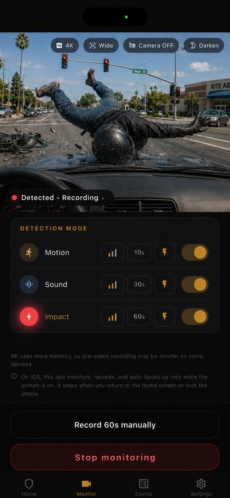

No wiring
Place a spare smartphone in your car and start monitoring without running cables through the vehicle.
Turn a spare smartphone into parked-car monitoring you can start in minutes, without wiring, installation, or vehicle modification.
For drivers who want parking surveillance without the cost, wiring, and setup friction of a dedicated parking-mode dash cam.
Easy setup
Dedicated parking-mode dash cams can require a device purchase, wiring, power accessories, professional installation, and car-specific setup. Parking Guard lets you start monitoring your parked car with a spare smartphone you already have.
Place a spare smartphone in your car and start monitoring without running cables through the vehicle.
No vehicle modification or shop visit required. Move it between cars whenever you need.
All you need is a spare smartphone and a simple mount. Add a battery pack for longer monitoring, and you can start in minutes.
Evidence first
Parking Guard uses a smartphone you no longer rely on every day to preserve usable clips and still frames around the incident. Its advantage is not just price: it lowers the barrier to getting parking surveillance started.
Use-case guides
Short landing pages explain how Parking Guard fits hit-and-runs, door dings, vandalism, spare-phone monitoring, dash-cam alternatives, and parked-car monitoring.


How it works
Place or mount the phone inside the car so it can watch the area where door dings, hit-and-runs, and vandalism are most likely to happen. No wiring, vehicle work, or permanent installation is required.
Choose motion, sound, impact, or any combination. Each detection mode also has three sensitivity levels. To reduce battery use, you can turn the camera view off or dim the entire screen.
When detection is triggered, Parking Guard captures a still frame at that moment and starts the video from 3 seconds before it happened. Recording after detection can be set to 10, 30, or 60 seconds.
Events stay available offline. Save the image or video to Photos, use optional Google Drive backup, or receive Gmail notifications.

Detection
Parking lots are unpredictable. A useful parking camera app should react to more than one signal, so Parking Guard lets you tune motion, sound, and impact detection separately. It can also send an alert to your Gmail address at the moment detection is triggered.
Watches the camera view for human movement and uses on-device processing to help focus on meaningful changes in the scene.
Listens through the phone microphone for everything from loud contact or crash sounds to quieter sounds like voices.
Uses the phone's motion sensors to detect jolts, shakes, or contact that may happen before a person notices the damage. If you use it like a dash cam, you can set sensitivity to weak so normal driving vibration is less likely to trigger detection.
When any selected detection mode is triggered, Parking Guard can blink the phone flashlight at maximum brightness. You can choose which detection modes are allowed to trigger the flashlight.

Privacy by design
Parking Guard is built around local evidence storage, so it can be used offline. Parking videos can be saved on your phone or automatically backed up to Google Drive. They are not sent anywhere else.
Clear limits
The best parking lot evidence app is one you can trust. That means explaining the boundaries clearly instead of overpromising.
Because of iOS rules, monitoring works only while the app remains open. Going back to the Home screen or locking the screen stops monitoring.
The recommended use case is shorter monitoring while eating, shopping, running errands, or parking at an apartment lot. Long use in a hot car during summer is not recommended.
On low-memory devices (2GB or less), Parking Guard automatically reduces recording load, including shorter pre-trigger capture and standard quality.
FAQ
Short answers for U.S. drivers comparing Parking Guard with dash cam parking mode, spare-phone camera apps, and general car security apps.
No. Parking Guard lowers the entry barrier for parked-car evidence using a spare phone. A dedicated dash cam may still be better for always-on driving and overnight parking.
It is designed for parking lot hit-and-runs, door dings, vandalism, suspicious contact, and break-in attempts where a video clip or still frame may help establish what happened.
Yes. Evidence is saved locally first. Internet is only needed for optional Google Drive backup or Gmail email notification.
Parking Guard supports English, German, Spanish, and Japanese.
Pricing
Parking Guard is available for $6.99 per month.